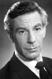

Country:United States, 126 minutes
Spoken languages:English
Genres:Action, Fantasy
Director(s):Tim Burton
Writer(s):Daniel Waters
Video Codec:Unknown
Number: 523


Certification:PG-13
Storyline:
While Batman deals with a deformed man calling himself the Penguin, an employee of a corrupt businessman transforms into the Catwoman.
Cast: 


Medium: Original DVD,
Comments: Part of: Four film favorites Batman Collection
Loaned: No
Aspect ratio: Unknown